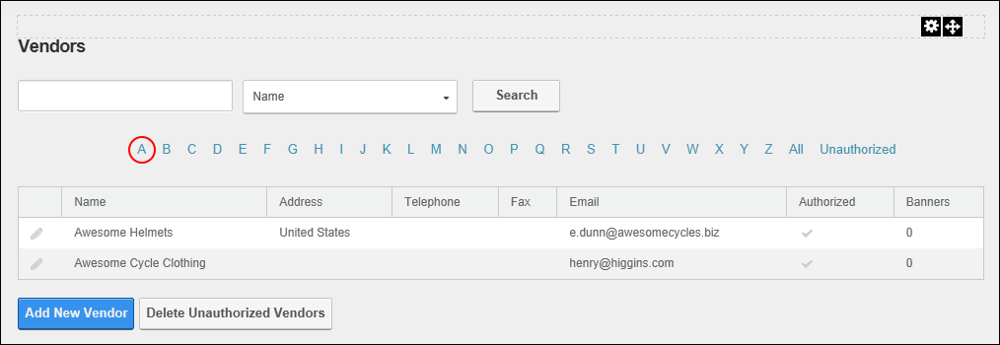

Filtering Vendors by Company Name
How to filter vendor records by the first letter of the company name using the Vendors module.
- Navigate to Admin > Advanced Settings >
 Vendors.
Vendors.
- Click on the linked [letter of the alphabet] that corresponds with the first letter of required vendor name (company name). This displays the first ten (10) matching records listed alphabetically by name. If there are more than ten matching records, then the Pager Control is displayed allowing you to access the other records.

Filtering Vendors by Name